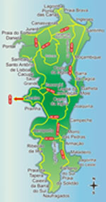

Florianópolis, a capital do estado de Santa Catarina, também conhecida como "ilha da magia" reserva muitas surpresas aos visitantes. São 42 praias e recantos de belezas ímpares.
As belezas naturais de Florianópolis encantam a todos. O arquipélago é formado por 46 ilhas. 32 pertencentes ao município, com mais de 100 praias distribuídas pelas ilhas e o continente.
Além de muitas outras atrações, como a agitada Lagoa da Conceição e a tranquila Lagoa do Peri, o tradicional Centro Histórico, a movimentada Avenida Beira-Mar, os bucólicos bairros de estilo açoriano de Santo Antônio de Lisboa e do Ribeirão da Ilha e as imponentes fortalezas coloniais. Sem falar nos museus, igrejas, teatros e do cartão postal da cidade: a Ponte Hercílio Luz.
A cidade tem uma costa de 172 km bem recortada, que contorna os 54 Km de comprimento e 18 Km de largura, num total de 433Km², divididos entre ilha e continente.